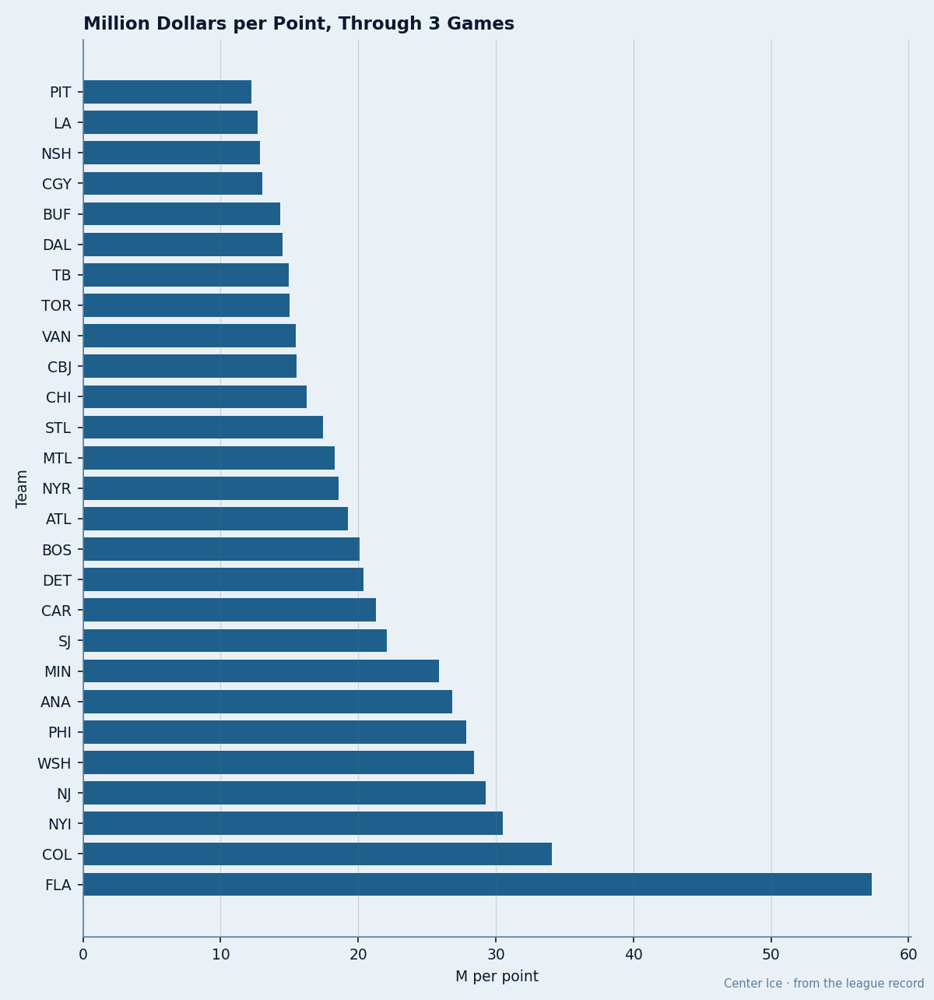
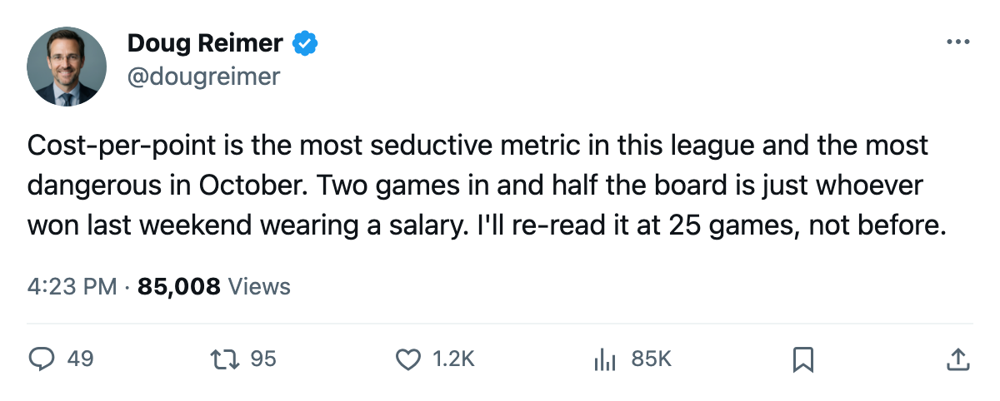
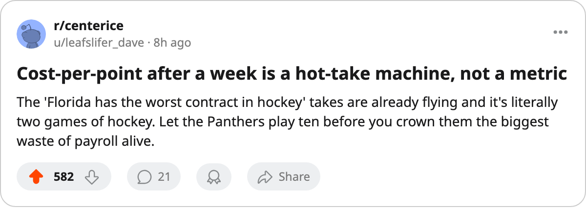

$12.23M Against $57.33M: The Cost-Per-Point Board After 3 Games Is a Points-Per-Game Ranking in Disguise
At 2 to 4 games the denominator is noise. Here is what the metric is actually measuring, and the one club where morale and the number point the same way.
 Doug ReimerAnalytics editor, ex-video coach · The Slot Report
Doug ReimerAnalytics editor, ex-video coach · The Slot ReportCost-per-point has a top and a bottom after three weeks of hockey
 Pittsburgh Penguins sits at $12.23M a point, the cheapest in the league.
Pittsburgh Penguins sits at $12.23M a point, the cheapest in the league.  Florida Panthers sits at $57.33M, the most expensive in the league. Colorado is next at $34.05M. Both numbers are real, and both describe the same thing: almost no points.
Florida Panthers sits at $57.33M, the most expensive in the league. Colorado is next at $34.05M. Both numbers are real, and both describe the same thing: almost no points.
The method is the one I ran all through the spring. Take a club's payroll, divide by its points, rank. Against a full season the metric finds bargains and it finds wrecks, and it called the right side of most first-round series. Against 2 to 4 games it is doing something else entirely. The points in the denominator are a handful of games deep, so the ranking inherits whoever scored at a high rate in October and labels them a bargain.
The denominator is the whole story
Sort the board and the pattern is impossible to miss. The clubs at the cheap end are the ones piling up points per game in a tiny sample, and the points-per-game column moves in lockstep with cost-per-point.
| Club | GP | Pts | Pts/GP | Cost/Point |
|---|---|---|---|---|
| Pittsburgh Penguins | 3 | 4 | 1.33 | $12.23M |
 Los Angeles Kings Los Angeles Kings | 2 | 4 | 2.00 | $12.70M |
 Nashville Predators Nashville Predators | 2 | 4 | 2.00 | $12.85M |
 Calgary Flames Calgary Flames | 3 | 4 | 1.33 | $13.02M |
 Buffalo Sabres Buffalo Sabres | 3 | 4 | 1.33 | $14.35M |
 Tampa Bay Lightning Tampa Bay Lightning | 2 | 4 | 2.00 | $14.97M |
 New York Islanders New York Islanders | 2 | 2 | 1.00 | $30.51M |
 Colorado Avalanche Colorado Avalanche | 2 | 2 | 1.00 | $34.05M |
| Florida Panthers | 2 | 1 | 0.50 | $57.33M |
Look at the three names on 2 games. Los Angeles Kings and Nashville Predators and Tampa Bay Lightning all sit near the top of the cheap column on a 2.00 points-per-game clip. Two games is not enough to sustain a ranking, and one bad weekend resets it. Pittsburgh's lead at $12.23M rests on 4 points in 3 games; drop to two points next week and it falls behind Buffalo Sabres at $14.35M without anyone on the roster changing.

The expensive end has the same defect run backwards. Florida Panthers at $57.33M has 1 point in 2 games. Florida's payroll is fixed for the season at $57.33M, so this reading cannot climb, but it can collapse the moment the Panthers string two wins together. A club is stuck at the bottom of this board only as long as it is stuck scoring nothing.
What survives the small sample
Strip the points column out and one number still means something on day 21: payroll itself. Colorado Avalanche has paid $68.11M and holds 0 wins in regulation with 2 points across 2 games, which is a real signal because $68.11M is a full-season figure and the point total is nowhere near it. Same for New York Islanders at $61.02M for 2 points. Those are the two contracts I would actually watch, and the bargain claims at the top of the board are just a hot week.
The one place morale agrees with the metric
Florida is the only club where the two boards tell the same story from opposite ends. The Panthers hold 98.5 club morale, tied for the second-highest in the league with Tampa Bay Lightning, and they hold the worst cost-per-point in the league. Good rooms have not turned into points yet, and at 1 point in 2 games there is nothing in the standings to argue the other way.
I will re-cut this at 25 games. Until then, whoever tops a 3-game cost-per-point board is just the team that scored well in three games. The one number that holds up is Colorado at $68.11M with 2 points, because that payroll outruns its point total and cannot catch up.

